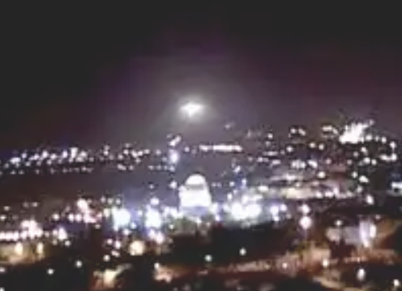
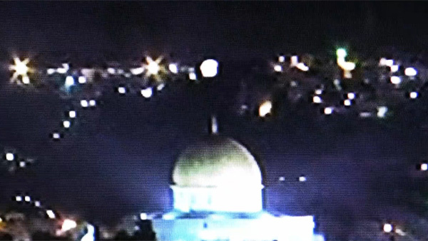
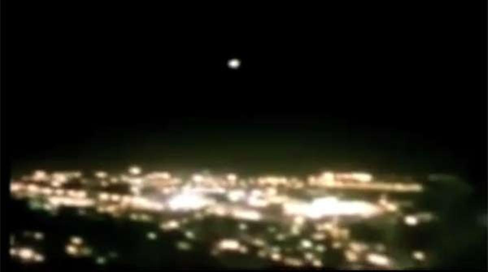

Corría el año 2011 cuando la red social YouTube se vio sacudida por una de las noticias más difundidas en materia OVNI hasta entonces.
En la Explanada de las Mezquitas de Jerusalén, varios turistas pudieron observar lo que parece ser una nave suspendida sobre la Cúpula de la Roca, lo que dio lugar a un encendido debate acerca de la llegada de extraterrestres a "Tierra Santa".
El hecho ocurrió el 28 de enero del 2011 a la 1:00 de la madrugada. Dos cámaras, ubicadas en distintos puntos de la ciudad de Jerusalén, registraron un mismo hecho, que causó furor en internet. Se trata de un FANI que arribó al monte moriah, exactamente sobre la cúspide del domo de la roca, el tercer lugar más sagrado para el Islam y la cual se adjudica como una visita de seres con origen extraterreno de cognotación negativa.
A través de las imágenes puede verse cómo una esfera de luz blanca desciende sobre la Explanada y planea durante algunos segundos sobre la dorada Cúpula de la Roca para repentinamente ascender hacia el espacio infinito a una velocidad vertiginosa.
"Hemos entregado las dos cintas a un laboratorio y no queremos pronunciarnos sobre la veracidad del material hasta que no tengamos los resultados", dijo a Efe David Ranan, portavoz de la Asociación Israelí de Investigación de OVNIS y Extraterrestres (AURA).
Ranan subraya que "las imágenes fueron tomadas desde distintos puntos de la ciudad por dos personas que no conocemos y que no tienen ninguna relación entre ellas".
Algunos estudiosos de los fenómenos paranormales han asegurado incluso que se llegó a producir un "contacto", en el que seres desconocidos habrían enviado un "rayo comunicador" con un mensaje cifrado a los terrícolas.
"Hemos recibido un montón de llamadas. Ha generado mucho nerviosismo, algunos tienen miedo, otros están contentos. Tres personas nos han confirmado que también avistaron el OVNI, aunque no lo grabaron", asegura Ranan.
El primer vídeo, de poco más de dos minutos, fue filmado desde el paseo de Armon Hanatziv (en el sur de Jerusalén) por Elyigal Gedaliyovich, fotógrafo israelí de 42 años que paseaba con su amigo para tomar unas imágenes de un proyecto en el que está trabajando, cuando vio de repente las bolas de luz y se apresuró a encender la cámara, según declaró al diario Yediot Aharonot.
Su voz hablando con sorpresa con su amigo de lo que estaba viendo también quedó recogida: "¿Qué es esa luz? Está prohibido volar ahí, ¿quizás sea un helicóptero militar?", dice uno, a lo que el otro contesta "parece una bola de luz, pero ¿qué es?, está descendiendo ¿lo ves?".
Gedaliyovich, que asevera haber sido testigo de otras visitas de naves alienígenas en el pasado que no logró capturar, afirma que ésta "claro que existen los OVNIS, lo único es que aquí en Israel nadie les presta atención".
El segundo vídeo fue tomado por turistas estadounidenses con un teléfono móvil más cerca de la Explanada de las Mezquitas, a las que también se oye reaccionar con sorpresa ante lo que identificaron de inmediato como una nave con seres de otro mundo.
El portavoz de AURA considera que "si las imágenes no son reales, la verdad es que la falsificación es perfecta y, si son verdaderas, entonces se trata de un suceso muy importante por el lugar exacto donde ocurrió, si bien todavía no sabemos lo que podría significar".
A estos documentos gráficos han seguido otros, varios de los cuales tratan de demostrar la manipulación de las imágenes, resaltando por ejemplo la exagerada intensidad del brillo o la falta de reflejos.
Otras grabaciones, difundidas más tarde para tratar de corroborar la presunta visita extraplanetaria, han sido tachadas de "claramente falsas" por buena parte de los internautas.
Ranan afirma que hace catorce años hubo "una gran oleada de avistamientos y aterrizajes de OVNIS en Israel, la mayoría en la localidad de Kadima (cerca de Netania) y en el desierto del Negev", pero que su asociación ha constatado que "la actividad ha decaído mucho desde entonces".